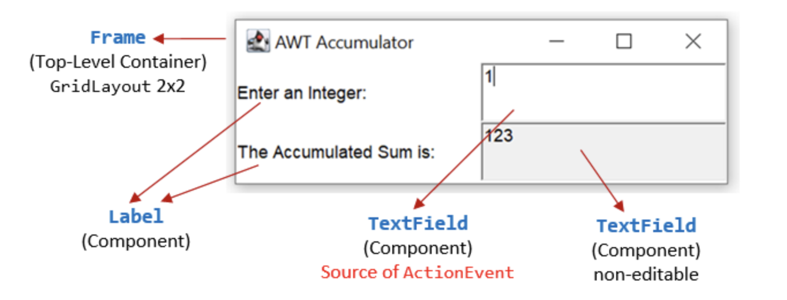

Lab Assignment 12
My Counter (Layout)
In this lab, you will practice creating a basic Swing layout with labels, text fields, and a button. You will not add any actions yet, next time, we will learn how to make the button functional.
Task Description

- A
JLabelto describe the counter - A non-editable
JTextFieldto display the current count - A
JButtonlabeled “Count” (you will add functionality later)
Step 1: Build the Layout
Create a new class called MyCounter that extends JPanel.
In its constructor, initialize the three components (label, text field, and button),
and use a simple layout manager such as FlowLayout or GridLayout
to arrange them horizontally.
setLayout(new FlowLayout());
add(label);
add(textField);
add(button);For now, your text field can display “0” as the starting count, and you do not need to handle clicks yet.
Step 2: Add to a JFrame
In your main viewer class (e.g., MyCounterViewer),
create a JFrame, add your MyCounter panel to it,
and call frame.pack() to size it properly.
JFrame frame = new JFrame();
frame.add(new MyCounter());
frame.pack();
frame.setVisible(true);Next lab: you will add an ActionListener to make the “Count” button increase the number.
💡 Hint: Building Components in the Constructor
Initialize your JLabel, JTextField, and JButton directly inside the constructor of your panel.
This ensures all components are ready before you add them to the layout.
JLabel label = new JLabel("Count:");
JTextField field = new JTextField("0", 5);
field.setEditable(false);
JButton button = new JButton("Count");💡 Hint: Choosing a Layout Manager
Use FlowLayout for a simple row of components (label, text field, and button).
You can experiment later with GridLayout(1, 3) to see how spacing changes.
setLayout(new FlowLayout());
add(label);
add(field);
add(button);💡 Hint: Adding the Panel to a Frame
When you test your panel, remember to add it to a JFrame before calling pack() and setVisible(true).
The typical pattern looks like this:
JFrame frame = new JFrame();
frame.add(new MyCounter());
frame.pack();
frame.setVisible(true);My Accumulator (Layout)
Overview
In this lab, you will focus on creating a Swing JPanel layout for an “Accumulator” interface.
You will not yet handle user input — this lab focuses only on positioning components neatly using layout managers.

1. Setup
- Create a new class named
MyAccumulatorthat extendsJPanel. - Import the necessary Swing and AWT packages.
- In your viewer class’s
main()method, add the panel to aJFrameand make it visible.
2. Layout
Use a 2×2 grid to arrange labels and text fields. For example:
setLayout(new GridLayout(2, 2, 5, 5));
– Row 1: A label “Enter an Integer:” and an editable text field for input
– Row 2: A label “Accumulated Sum:” and a non‐editable text field for output
Because your grid is 2×2, the components will appear in order as you call add():
add(new JLabel("Enter an Integer:"));
add(inputField);
add(new JLabel("Accumulated Sum:"));
add(outputField);Set the output field to be non-editable: outputField.setEditable(false);
3. What’s Next
In the next lab, you will add ActionListener logic so that pressing Enter in the input field updates the accumulated sum.
💡 Hint: Component Order in GridLayout
A GridLayout(2, 2) fills cells left-to-right, top-to-bottom in the order you call add().
To match the screenshot layout:
add(new JLabel("Enter an Integer:"));
add(inputField);
add(new JLabel("Accumulated Sum:"));
add(outputField);💡 Hint: Making Output Read-Only
Set your sum display field as non-editable so users can’t type into it:
outputField.setEditable(false);💡 Hint: Adjusting Panel Size
If your frame looks too small, you can suggest a preferred size for the panel before calling pack():
setPreferredSize(new Dimension(250, 100));💡 Hint: Required Imports
Make sure to import both Swing and AWT packages at the top of your file:
import javax.swing.*;
import java.awt.*;